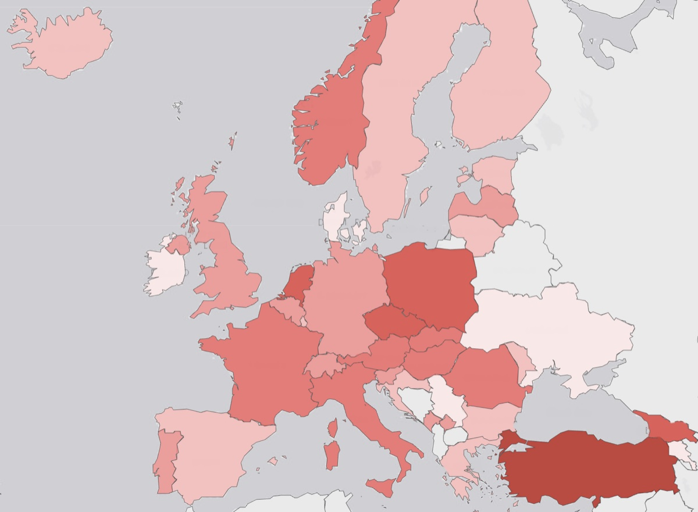

About
My name is Bartek and I am a Data Scientist, particularly interested in the ways we can use data to visualize and better understand current societal and political trends. I am also interested in linguistics, in particular the linguistic diversity and how minority languages can be supported by developing natural language processing tools.
Projects

Far-Right Tracker Europe
An interactive map of support for nationalist and far-right parties across Europe. Hover a country to see its parties and current polling, click it for time-series trends and data sources.
Reflection
One point that hit me when doing this project was the definition of what we consider far right, and why far right is the term that is being thrown around. In answering the second question, based on numerous articles I’ve read, conversations I’ve had and experiences of having lived in places that are some of the hotbeds of the rise of such parties, my conclusion was that it is the right that threatens democracies. In countries classified as hybrid regimes, where the history of stable democratic institutions is limited, far right or right-wing populist parties were largely missing. This flabbergasted me: United Russia with its fascist rhetoric and the Serbian Progressive Party of Vučić, which fosters hateful rhetoric against minorities and bashes the EU, are not labeled as such. Perhaps it is the entrenchment of the political systems in these countries into one-party rule over many years that repositions the center and makes labeling on the far side of the political spectrum unhelpful. Many of the ruling parties in such states are described as big tent, not following a certain ideology but re-aligning based on the geopolitical landscape and the topics important to voters that can gain traction.
Thus the label far right makes most sense in following current emerging anti-establishment trends in the EU states. Even here we do have exceptions: Poland and Slovakia. In Poland, PiS, worldwide infamous for its attacks on the judiciary and women’s reproductive rights and for its homophobic rhetoric, is often described as far right, yet it has brought forward many policies associated more with the left, like increasing child benefits and reforming the welfare state. In Slovakia, Fico’s Smer identifies itself as left of the political spectrum.

Polish-Silesian Translation Model
A neural machine translation model for Polish to Silesian, built by fine-tuning the multilingual Slavic OPUS-MT model on Silesian-Polish Wikipedia.